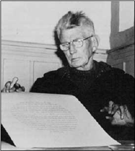
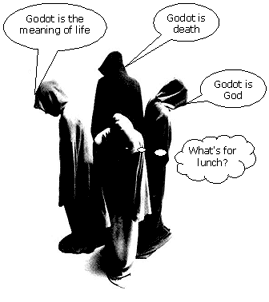

Implementation Implementation |
Waiting for Godot continued
Introduction | Curriculum links | Writer | Activities: Writer | World of play | Activities: World of play | Actors |
Activities: Actors | Design | Activities: Design | Script extracts
The writer – Samuel Becket
Jump to > Biography / About the play / References

Samuel Beckett
Biography: Samuel Beckett
Samuel Beckett was born in Ireland in 1906. He graduated from Trinity College, Dublin, with majors in French and Italian.
In 1928 he was appointed English lecturer at the famous École Normale Supérieure in Paris, where he stayed until 1930. He returned
to Ireland briefly to obtain his Masters degree, then travelled widely throughout Europe between 1932 and 1937, before making Paris
his permanent home.
During World War II, Beckett became actively involved in the French resistance movement, until the arrest of several friends in 1942
obliged him to distance himself to escape Nazi detection. It was then that he moved to Vinchy and worked as a farm labourer.
Back in Paris after the war, Beckett soon became part of a group of avant-garde artists, developing a close friendship with
James Joyce.

It was in 1952 that Beckett wrote the work that would bring him international acclaim, Waiting for Godot.
However, it had an inauspicious beginning. The premiere in Paris in 1953 was in a tiny theatre and with a cast of university students.
A student's guide to the plays of Samuel Beckett (pp. 38–9) describes the initial reaction to the play:
The reactions of the Paris audience were mixed but the play immediately gained distinguished supporters. Jean Anouilh saw the opening
of Godot as being as important as the first production of a Pirandello play in Paris forty years earlier.
Jacques Audiberti wrote in Arts of 16 January 1953 that Godot seemed, 'a perfect work which deserves triumph,' and Armand Salacrou
claimed in the same magazine on 27 February that they had all been waiting 'for this play of our time.'
… At its first London production, the play was treated with bafflement and derision by the daily paper, but two important reviews
in the Sunday Times and The Observer … started the flow of enthusiasm, speculation, and controversy that has surrounded Godot ever
since. After the publication of the text by Faber in 1956, a review by GS Fraser in the Times Literary Supplement provoked a
correspondence lasting several weeks about the meaning of the play.
Although best known for his plays, Beckett worked in a variety of literary forms, including novel, short story, poetry, and film,
radio and television scripts.
That most of Beckett's important works, including Waiting for Godot, were originally written in French is surely a testament to
his outstanding literary ability.
Beckett won the Nobel Prize for Literature at the age of 57, and died in his beloved Paris on 22 December 1989, aged 83.
Principal plays
Waiting for Godot (in French 1952, in English 1954)
Endgame (in French 1957, in English 1958)
All That Fall (1957)
Krapp's Last Tape (in English 1959)
Happy Days (in English 1961)
About the play
Waiting for Godot is often described as a play in which nothing happens, twice. No doubt any audience will have some sympathy for
this assessment. The first and the second half of the play are remarkably similar and there is little if any dramatic movement.
How is it, then, that this is considered one of the greatest plays of the twentieth century?
The first question that undoubtedly springs to mind is 'Who or what is Godot?'

There are a number of equally valid answers to this question but, whoever or whatever Godot may be, the play is a fable about
existence. However, as Gunther Anders points out (in Esslin (Ed.)), Waiting for Godot is no ordinary fable.
Essentially one could argue that Waiting for Godot is like a fable that lacks a moral or a lesson. Godot never arrives and, as such,
there are no sudden revelations about the meaning of life, about the existence of God, or even about death. The lesson of Waiting for
Godot is that there are no answers, that there is no moral.
A good way to try and understand what a play may be about is to
look at each of the elements in the play, such as the setting,
action, dialogue, relationships, and themes. Each of these elements often helps
to elucidate the important themes of the work.
Setting
Both acts of the play take place in the same setting – a nondescript country road with a single tree. Also both acts happen at the
same time – the evening. Even though the second act happens the next day, there are no changes in the setting, which helps reinforce
a sense of stagnation. Just as there is no change in the setting, there is no dramatic movement in the play.
Action
There are a number of similarities between the action in the first and second acts:
- We learn that Estragon had just received a beating.
- There is discussion about Estragon's feet and his boots.
- There is discussion about Estragon's urination.
- The characters consider suicide by hanging.
- The two main characters meet Lucky, Pozzo, and a boy.
- Both end in inaction, after the words, "Yes, let's go."
We can say that Waiting for Godot does not have the linear structure that is typical of most drama, but instead has a circular
structure. Any movement that does occur brings the characters back to the same place. For example, we assume that, at the end of the
first act, Vladimir leaves but returns the next day and, as in the first act, Lucky and Pozzo arrive again in the second. For all
their movement, the characters are effectively stationary.
Dialogue
Much like the action of the play, the dialogue is circular – it is inconclusive and repetitive. Whatever the characters talk about,
no firm conclusions are ever reached. They often consider the possibility of leaving but end up deciding that waiting is their only
sensible or real option. J Blakey explains:
The conversations … reach no logical conclusions. Perhaps the best illustration of the nature of the dialogue in the play is provided by
Lucky. In the first act, Lucky, at the command of his master, gives a long and justly well-known speech. It is in the form of a
quasi-theological address that, at its core, has an apparently serious statement to make. Eliminating the nonsensical repetitions
and comic irrelevancies, Lucky begins to make something like the following declaration:
Given the existence … of a personal God … outside time … who loves us dearly … and suffers … with those who … are plunged in
torment … it is established beyond all doubt … that man …
From the point of view of coherence and logic, the speech ends there. The conclusion is never given; the
logical result of the assumptions (if any) never stated. The ultimate meaning is lost in a maze of irrelevance and incoherence …
Lucky's speech, which began with a solid core of meaning and degenerates into mere noises and finally silence, can be said to be
typical of much of the dialogue in Waiting for Godot.
One might argue that the lack of meaning, of sensible dialogue, is a theme of the play, perhaps the theme of the play. Lucky's
failure to reconcile a personal God with man's suffering and torment is our spiritual crisis and, though it is by no means a new one,
it is the crisis of our existence.
Relationships
Consider the 'Happy' exchange (Script extract 1) between Estragon and Vladimir.
The relationship between Vladimir and Estragon has no real effect on their lives. We cannot tell whether either of them benefits
from it in any way and it certainly brings about no real dramatic movement.
At most, one might argue that they keep each other company but, as neither derive pleasure nor pain from the relationship, it seems
to be a pointless, meaningless one.
Initially it would appear that the relationship between Lucky and Pozzo is quite different. Grotesque as it may appear to the audience,
there is a clear structure to their relationship and Pozzo, at least, benefits from it. However, by the second act their relationship
is completely ambiguous and any trace of roles has all but vanished. Ultimately their relationship brings them as little benefit as
that of Vladimir and Estragon.
Themes
Waiting for Godot is an enormously complex work. There can be no simple elucidation or explication of the text. One could argue that
this is the case with many important works because, if a simple explanation of the work's meaning were possible, it would probably
undermine the importance if not the very need for the work itself.
In the case of Waiting for Godot, there is a veritable library of critical texts written about it. There is no single idea one can
point to in the play – it explores many important themes (such as religion, life, existence, God) simultaneously because there is a
complex interaction between these ideas that cannot be unravelled simply.
As an example of this, and as an extract that might be considered generally representative of the play, consider Vladimir and
Estragon's discussion of the Crucifixion (Script extract 2).
There are a number of ideas packed into this scene. What strikes one first
and foremost is the role that chance plays in the lives of the
thieves and, therefore, all people. Only two condemned men were
executed with Jesus and so only those two were given the opportunity
to receive absolution. One of those thieves abused Jesus and as
a result was damned – the other came to Jesus' defence and was
saved. That words uttered during a time of extreme pain and suffering
could have such a significant impact on the lives of two ordinary
men is nothing short of ridiculous – in fact, it is nothing
short of absurd.
However this is no isolated instance peculiar to the scriptures. Rather it serves as an observation that chance – simple
circumstance – can have an enormous and irreversible effect on our lives.
Furthermore, the disagreement in the scriptures about what actually happened serves to undermine our certainty in what is real.
As each second is lost we can only rely on memory to inform us of what happened and memory is fallible. Our grip on what is real is
tentative at best.
Clearly a number of complex and related themes are all touched on in this simple exchange between the main protagonists.
Blakey argues:
The play is a parable of … man's existence… He passes time. He hopes for something new, though hope is dispirited and lifeless.
He simply waits. What it is he awaits, he is not sure. But he feels compelled to wait.
References
Beckett, Samuel (1956, 1985 reprint). Waiting for Godot. London and Boston: Faber and Faber. Note: The page numbers for script extracts in this resource refer to this edition.
Blakey, J. (1976). Waiting for Godot – Notes. Toronto: Coles
Publishing Ltd.
Esslin, M. (Ed.), (1965). Samuel Beckett – a collection of critical essays. New Jersey: Prentice-Hall Publishers. Note: Includes essay by Gunther Anders.
Fletcher, J. and Spurling, J. (1972). Beckett: a study of his plays. London: Eyre Methuen Publishers.
Fletcher, B., Fletcher, J., Smith, B. and Bachem, W. (1978). A student's guide to the plays of Samuel Beckett. London and Boston: Faber and Faber.
|
Printing this page
To download and print this page, select from Word or PDF formats:
|
next: Activities: Writer | Back to top
|